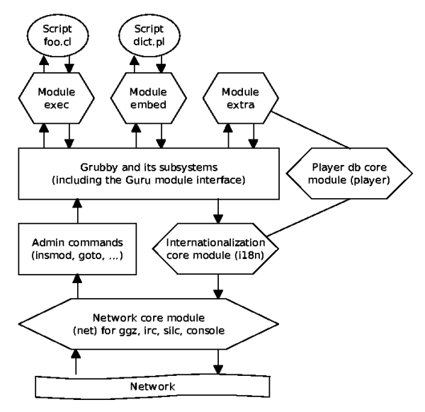

This document explains the design and implementation of the grubby chatbot. It will also help module authors understand the inner processes. For further reading, the Grubby User Manual and the Grubby Administration Manual are available.
Grubby is a modular chatbot, which provides support for different network protocols, internationalization, message logging, player databases and external scripts. It reads its configuration from a file named grubby.rc, loads all the configured modules and core modules, and connects to the network in order to start working. As can be seen in the graphics below, there is only one core module active of each type (network, player database and internationalization), whereas the regular modules can be loaded in any number.

When receiving a message, it is first examined on being either a normal chat message, a message directed at grubby, a private message to grubby, a room/channel event (like join or leave messages), or a timer tick. A Guru object is assembled if the message is directed at grubby, and sent through the module handler, which will pass it to each module until a response can be read. Some of these modules, namely exec and embed, can also in turn run some scripts or external programmes. On return, the answer passes the internationalization stage, where it can be translated into the player's language if desired. Player commands which affect the language settings are also dealt with in this stage.
The network core module is state-based, and start in the NOOP state. After readings its configuration file, grubby will call net_connect, and once the connection is established, the LOGIN state will be reached. This in turn will trigger the net_join function to be called. Once the join is completed, grubby will be in the channel/room and is ready to send and receive messages. This is indicated by switching to the GOTREADY state. Grubby recognizes this, but switches back to NOOP state automatically, while continously polling the network plugin. As soon as a message is received, the state is set to INPUT, causing grubby to read the message using the net_input function. If the admin command handler, any core module or any module turns this message into an answer, it is written back using the net_output function.
If you intend to write a module, have a look at the file Tutorial in grubby's doc/ directory.